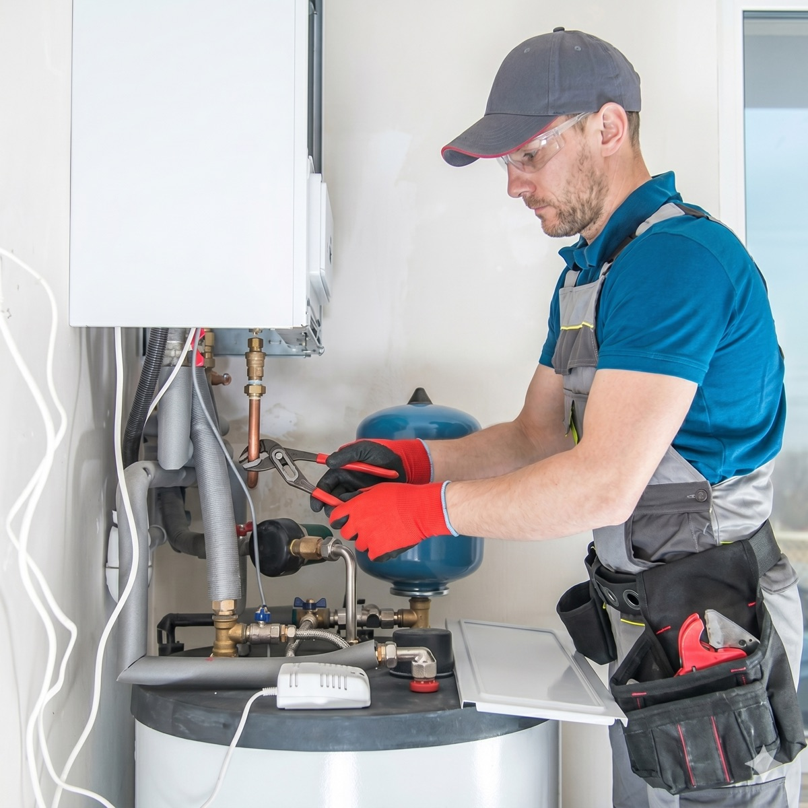
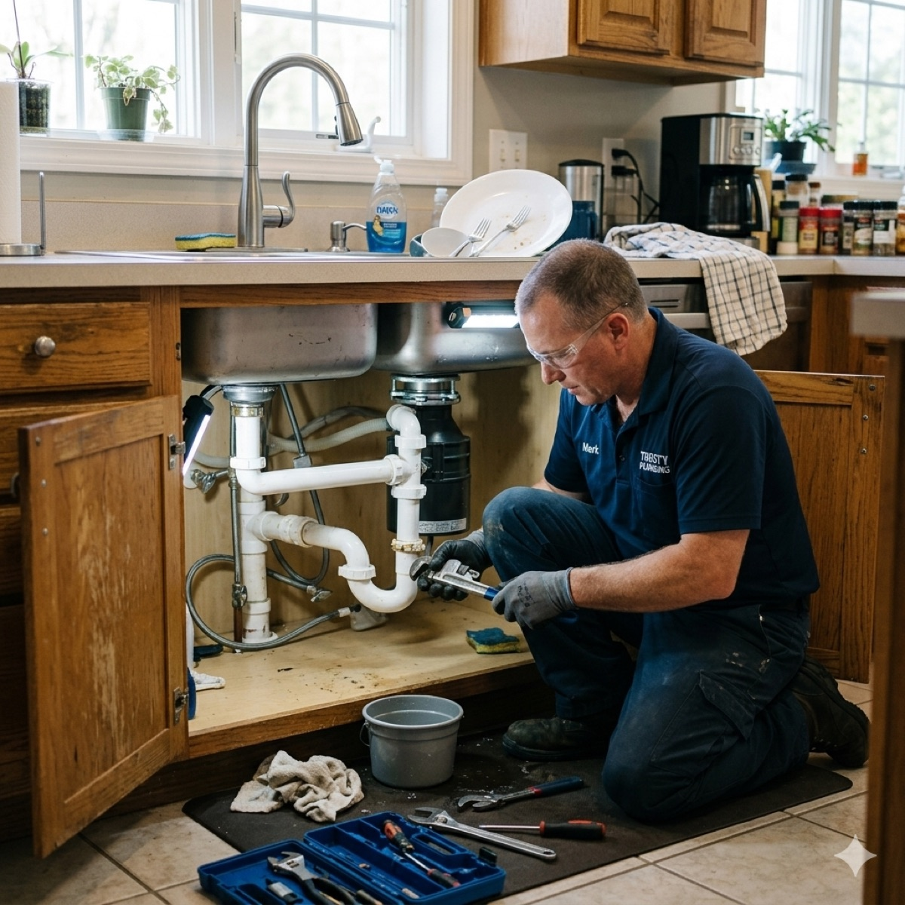
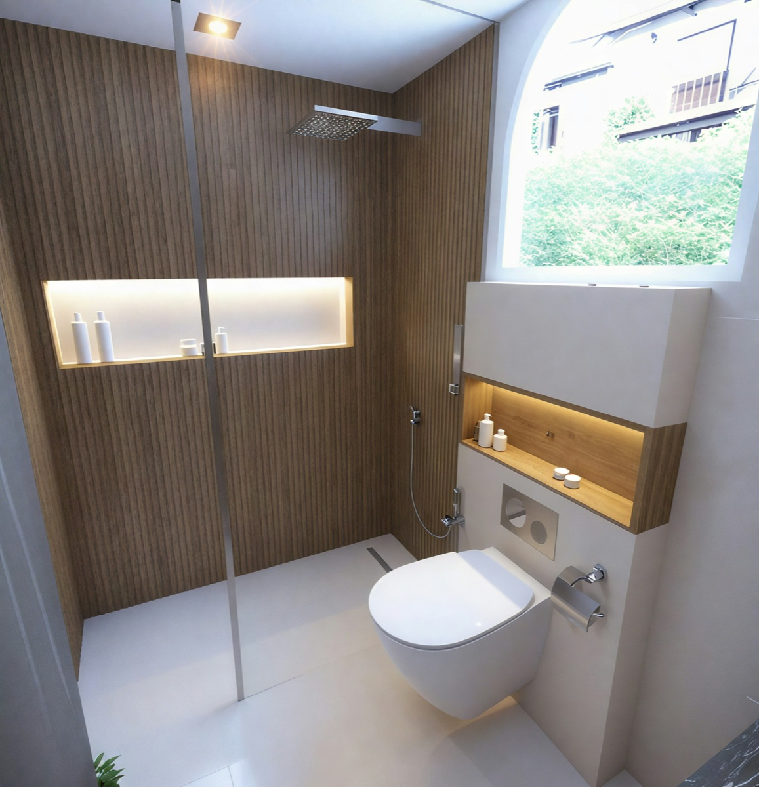
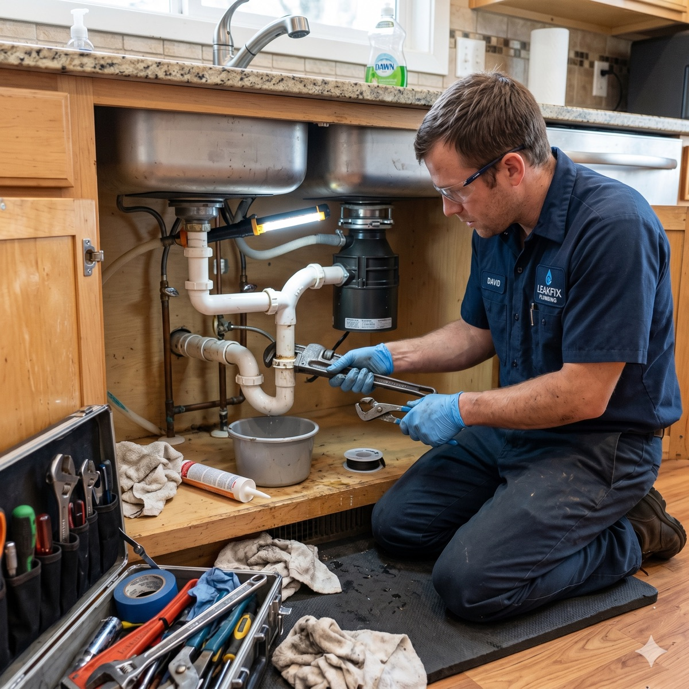
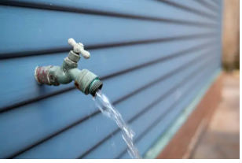
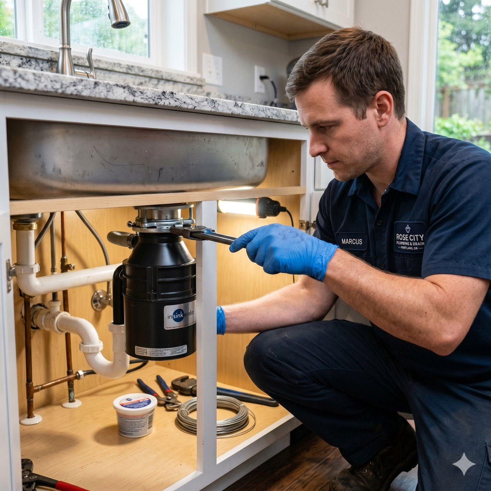
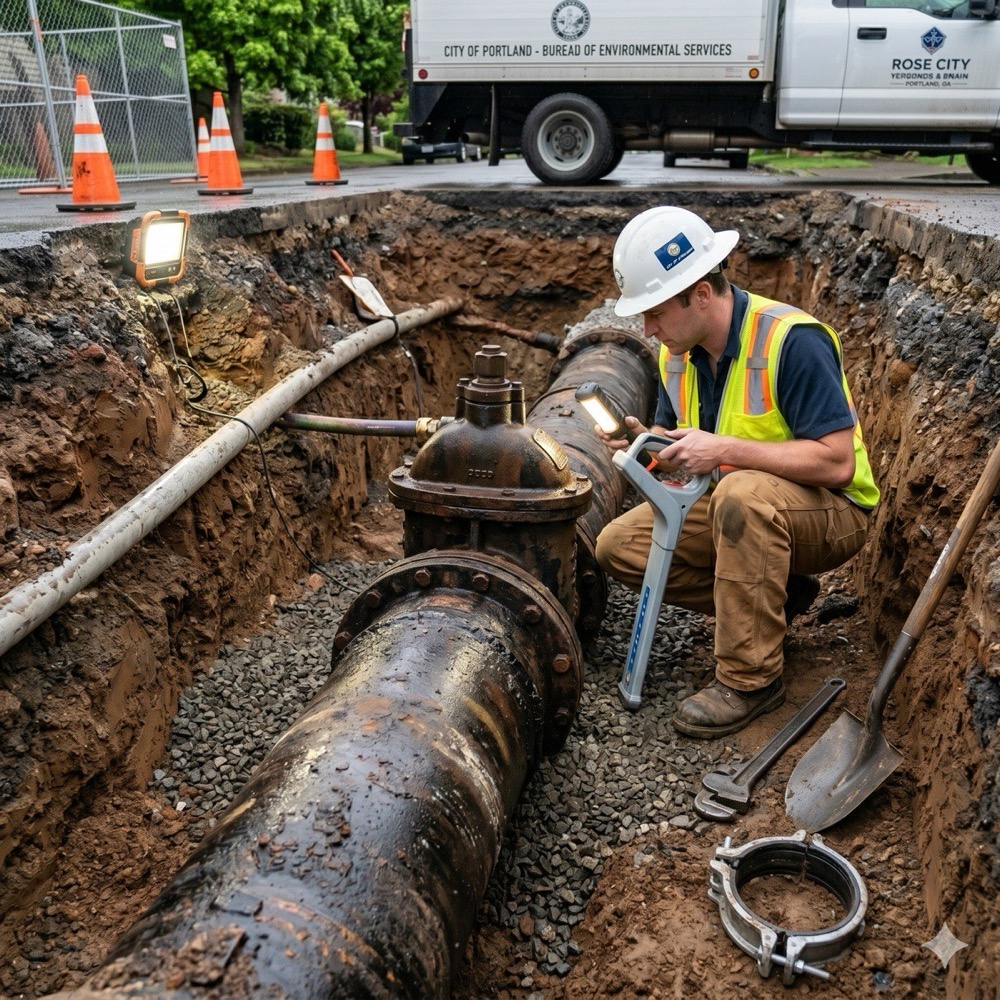
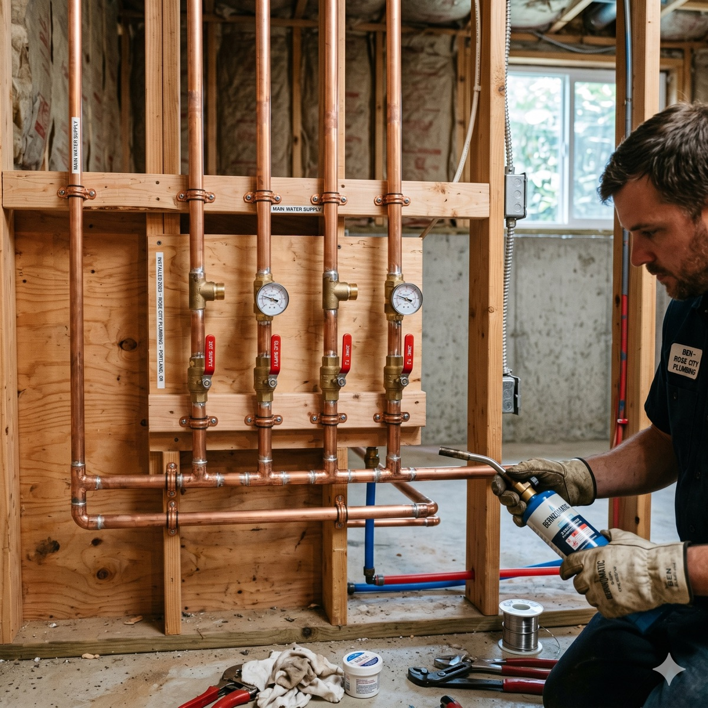
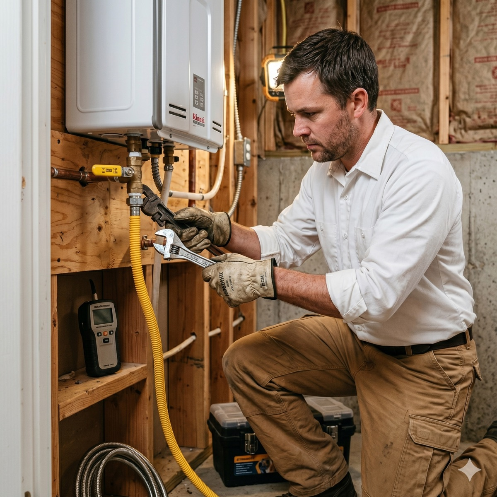
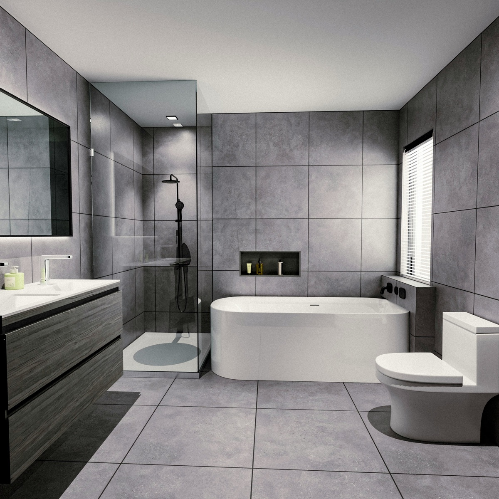

Honest work. Fair prices. 20+ years of experience behind every job.

Whether your water heater stopped working this morning or you know it's on its last legs, we can help. We repair and replace both tank and tankless water heaters.
We'll diagnose the problem, explain your options, and give you an honest recommendation. No pressure to replace something that can be fixed.

Clogged kitchen sink? Slow bathtub drain? Toilet that won't flush? We clear clogged drains in sinks, tubs, and toilets. We'll also let you know what caused the clog so you can help prevent it next time.
Note: We do not guarantee clearing all drain stoppages, as some blockages require specialized equipment beyond standard drain cleaning.
A dripping faucet wastes water and money. We repair and replace kitchen and bathroom faucets.
If yours can be fixed, we'll fix it. If it needs replacing, we'll help you choose a good option and install it right.

Running toilet? Leaking at the base? Won't flush properly? We handle all toilet repairs and replacements.
A running toilet can waste hundreds of gallons of water a month, so don't put this one off.

Water leaks can cause serious damage if they're not caught early. We find and fix leaks in pipes, fixtures, and connections.
If you see water where it shouldn't be, or your water bill suddenly jumped, give us a call.

Your outdoor faucet (hose bib) takes a beating from Portland winters. We repair and replace hose bibs so you're ready for garden season without worrying about leaks or frozen pipes.

Garbage disposal jammed, leaking, or just not working? We repair and replace all major brands.
If yours is beyond saving, we'll install a new one.

Problems with your main water line can affect your whole house. Low pressure, discolored water, or unexplained wet spots in the yard can all point to a water service issue.
We repair and replace water service lines.

Older Portland homes often have galvanized steel pipes that corrode over time. If you're dealing with low water pressure, rust-colored water, or frequent leaks, it might be time for a re-pipe.
We replace old piping with modern materials that will last.

We install and repair gas lines for appliances like water heaters, dryers, and ranges. Gas work requires a licensed plumber.
Don't take chances with this one.

Updating a bathroom or kitchen? We handle the plumbing side of small remodels: moving fixtures, running new lines, and connecting everything properly.
We work with your contractor or directly with you.
We charge by the hour with a one-hour minimum, then in 15-minute increments. We charge for estimates, but if you hire us, we credit that fee toward the job. No surprises, no hidden costs. We'll tell you what it costs before we start.
Lani will get you scheduled. Derek will get it fixed.